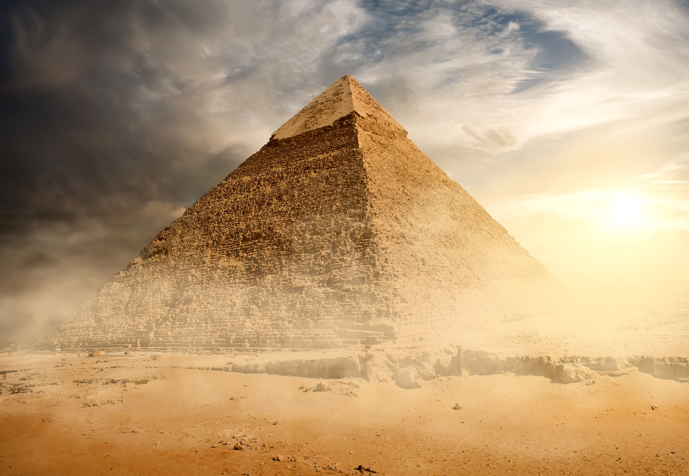
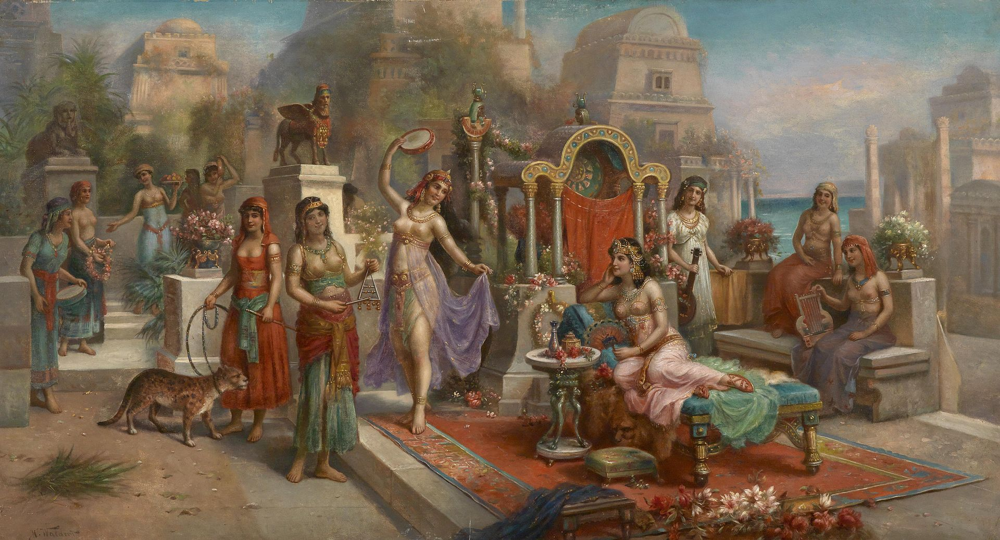
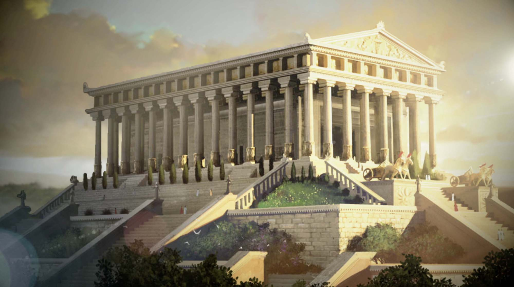
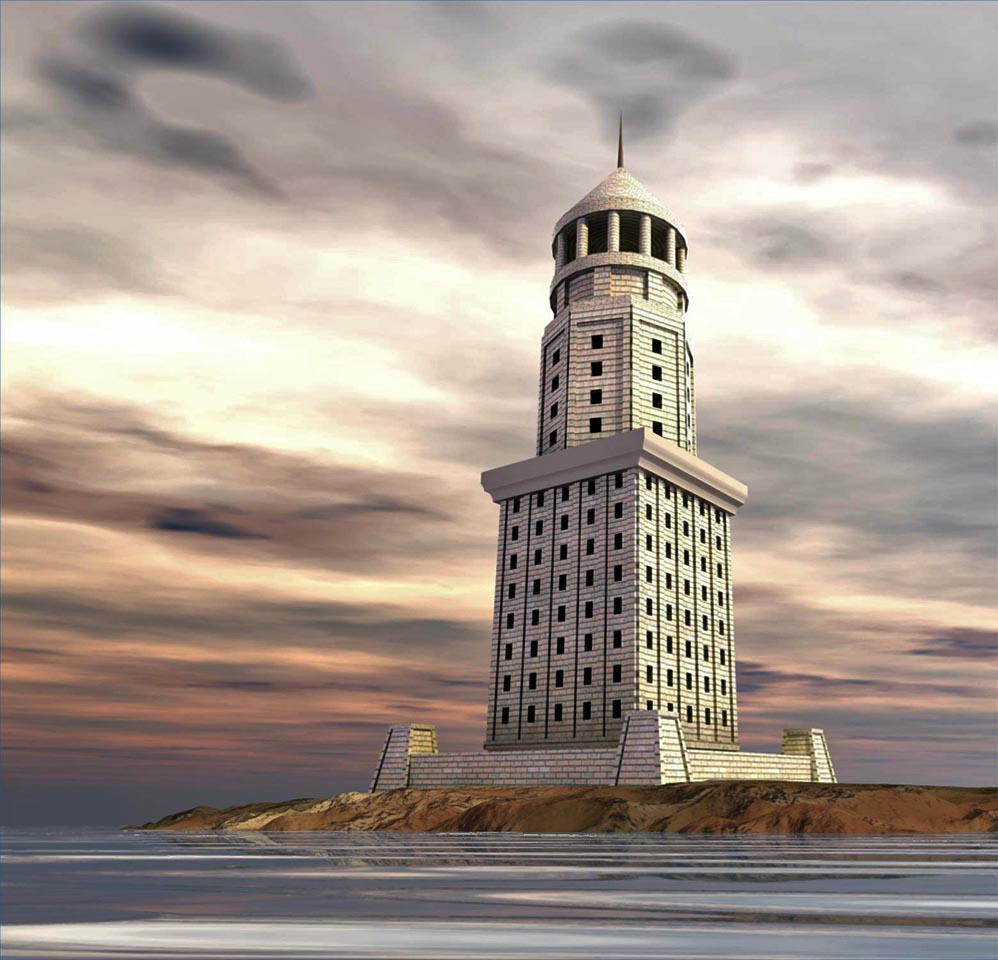

The Wonders of the Ancient World are seven unique structures that tell the tales of how civilizations left their marks on the world. Chosen by Hellenic travelers passing through Persian, Babylonian, and Egyptian lands, each wonder is extraordinary. From the lush, incredible architecture of Babylon, to the remarkable statue of Zeus at Olympia, these seven exceptional constructions will take your imagination to new heights.
1. Great Pyramid of Giza
The Great Pyramid of Giza is the only complex that still exists in the world. In modern day geography, it exists in Greater Cairo, Egypt, by the west bank of the Nile River. The pyramid is known to be the oldest of the Giza pyramid complex, and also the oldest ancient wonder.
- The proportions of the pyramid are mammoth - the base is 230m × 230m, with a height of 138.
- The giant pyramid was erected around 2560 B.C.E.
- Constructed over 27 years.
- 2.3 million stone blocks were crafted for this monolith of a pyramid.
- Pyramid was built as a tomb for the benign pharaoh Khufu.
- The tallest man-made structure for over 3000 years.
- Khufu’s vizier, Hemiunu, is believed to have been the architect of the Great Pyramid.
- 5.5 billion kilograms of limestone, 8 million kilograms of granite, and 500 million kilograms of mortar were used for construction. (Over 2.3 million blocks)
- Pyramid was cased with while limestone on the outside. Over the course of history, the white limestone faded away.
2. Hanging Gardens of Babylon
There is no firsthand evidence that the Hanging Gardens of Babylon ever existed; however, it is still considered one of the wonders. The Hanging Gardens is the only wonder for which the location has not been definitely established, but archaeologists have narrowed it down to somewhere in modern day Iraq. It was described as an impressive array of blooming flowers, luscious fruit, exotic foliage, and grand waterfalls. The miraculous feat of engineering resembles a large green mountain built with mud bricks. It was believed that the Hanging Gardens were built around 600 B.C.E., by King Nebuchadnezzar II for his gorgeous wife, Queen Amytis. No ancient Babylonian texts have ever mentioned the existence of these gardens, and no definite archaeological evidence has been found in Babylon.
3. Statue of Zeus

To create this magnificent sculpture, it took the most renowned sculptor of the ancient era to do so. Phidias, who many historians consider to be one of the greatest ancient Greek architects, produced the statue worthy of the fabled god. Seated in the Temple of Zeus at Olympia in Greece, the statue showed Zeus seated on a throne crusted in gold, ivory, ebony, and precious stones. The creation was described to be Zeus, at a notable height of 12.4 meters, holding a statue of Nike, goddess of victory in his right hand and a scepter topped with an eagle on the left.
The grandiose statue was destroyed in the fifth century AD, after the statue was moved to Constantinople where it was later destroyed by the great fire of the Palace of Lausus, in 475 AD.
4. Temple of Artemis
In Ephesus, a temple constructed that was so opulent it was described in Antipater of Sidon’s list of the Seven Wonders as the following:
“I have set eyes on the wall of lofty Babylon on which is a road for chariots, and the statue of Zeus by the Alpheus, and the hanging gardens, and the colossus of the Sun, and the huge labour of the high pyramids, and the vast tomb of Mausolus; but when I saw the house of Artemis that mounted to the clouds, those other marvels lost their brilliancy, and I said, "Lo, apart from Olympus, the Sun never looked on aught so grand".”
“The Temple of Artemis was a Greek temple dedicated to the benevolent goddess of the hunt, Artemis. Originally constructed to celebrate Artemis, it became a revered place of worship as the years went past. The temple went through more rebuilding than any other wonder, being completely rebuilt twice. The final destruction was initiated by Herostratus, who sought fame by destroying the beautiful creation.”
5. Mausoleum of Halicarnassus

Among the most monumental structures to house the departed was the enormous Mausoleum of Halicarnassus. Also known as the Tomb of Mausolus, it was the final resting place of Maussollos, a governor in the Persian Empire, and his sister-wife Artemisia II of Caria, who initiated its construction in 351 BC. The structure was designed by Greek architects Pythius of Priene and Satyros. The mausoleum was said to be 41 meters high and was adorned with intricate exterior carvings and precious works of art. Though it stood hard and firm for centuries, a series of earthquakes finally tumbled it down somewhere between the 12th-15th century AD. It was the last surviving of the six destroyed wonders.
The word Mausoleum is now used to describe an above-ground tomb.
6. Colossus of Rhodes

Visitors to ancient Rhodes were greeted by a colossal statue of Helios, the Greek sun god. Built during 280 B.C.E. by the celebrated sculptor Chares of Lindos, it was built to commemorate the successful defense of Rhodes city against an attack by Demetrius Poliorcetes, who had besieged it for a year with a huge army and a large navy. After only existing for less than 60 years, an earthquake destroyed the statue. The Colossus stood 33 meters high before its destruction. The ruins of the statue remained a popular tourist attraction for more than 800 years.
7. Lighthouse of Alexandria
Considered a technical masterpiece that served as the model for all lighthouses that followed, the Lighthouse of Alexandria (also known as the Pharos of Alexandria) was a lighthouse built by the Greeks of Ancient Egypt, during the reign of Ptolemy II Philadelphus.
Standing over 107 meters tall and used as a navigational landmark for voyagers along the Egyptian coast, the lighthouse was created in three unique stages:
- A square stone base
- An octagonal middle section
- Cylindrical section at the very top
To reflect light, at the apex a mirror was put to rebound sunlight. At night, a fire was lit to guide late travelers.
The lighthouse was destroyed by an earthquake in the 14th century AD.
These Seven Wonders of the Ancient World are truly tremendous treasures of the world that can never be recreated again. Interested in learning more? This video explains the Seven Wonders exceptionally well.